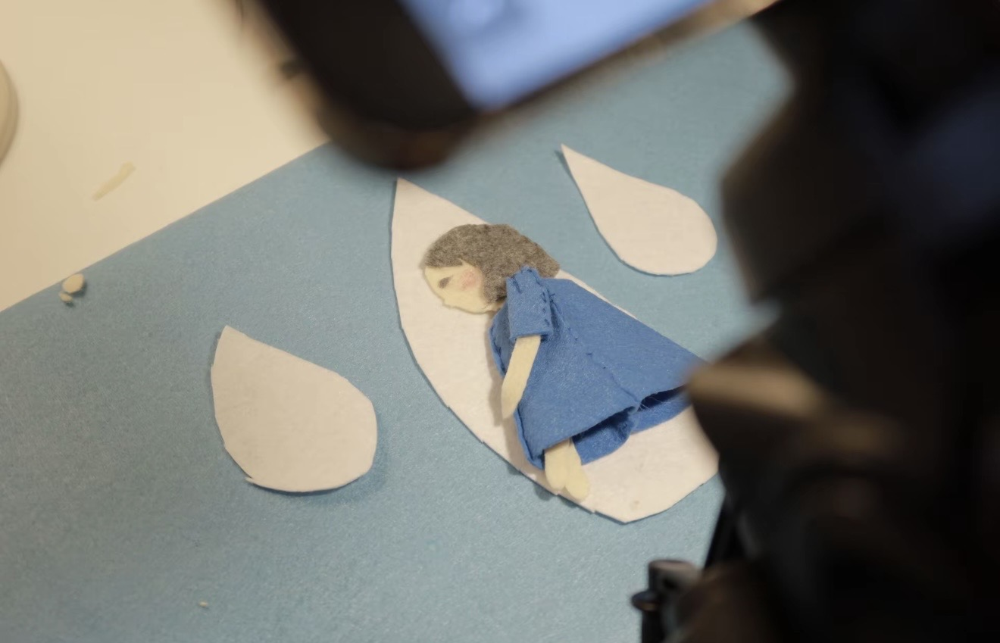
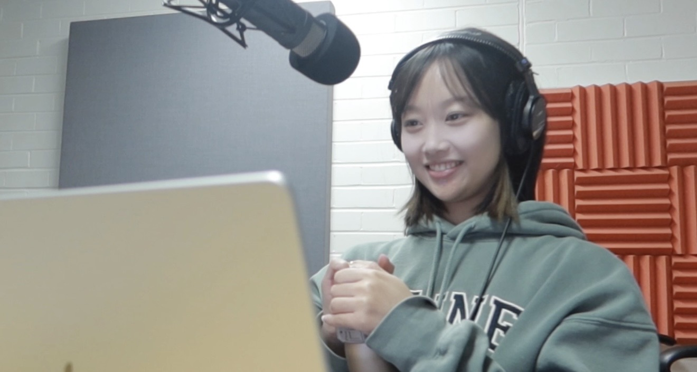
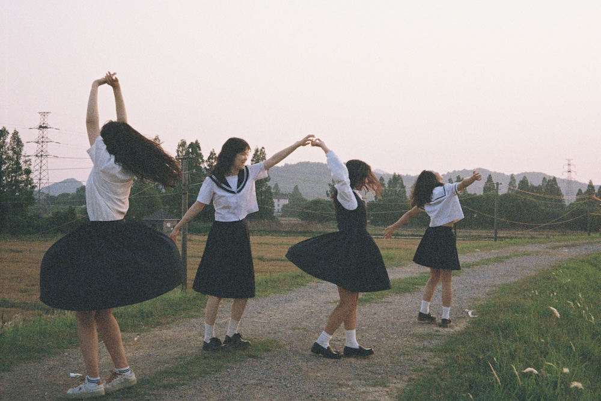
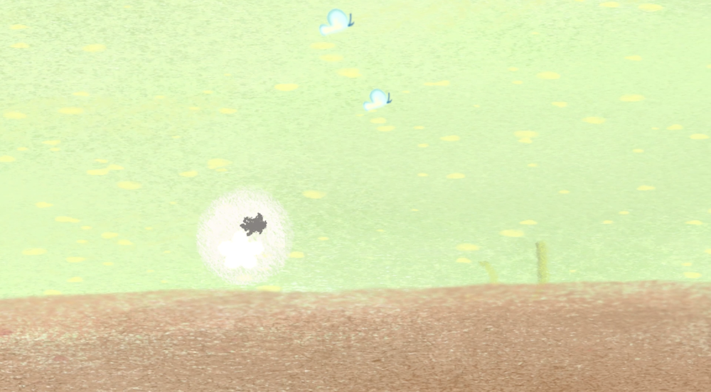
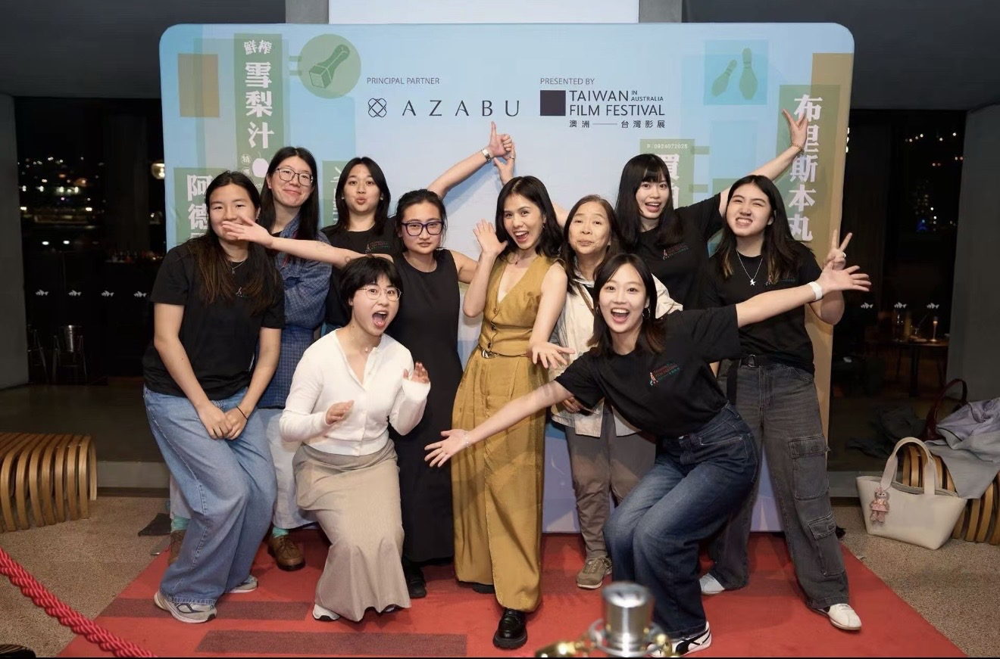

Beyond Work
Curiosity Driven

Stop-motion
View Details ✦
She Heard the Rain Speak
Gave rain a voice through stop-motion.

Podcast
View Details ✦
Let's Talk About Love
On feelings, relationships, and ourselves.

Photography
View Details ✦
Japanese-style Film Photography
Capturing quiet tenderness in everyday life.

Vlog
View Details ✦
Full Marks Dousu
Turning the camera on life.

Unity 2D
View Details ✦
Homemade 2D Game
Learned Unity from scratch to build the world in my head.

Volunteer · Photography
View Details ✦
Capturing the Moment
Taiwan Film Festival official photographer · Shen Yicheng concert volunteer